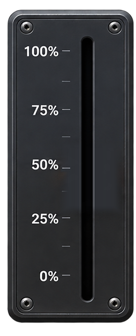
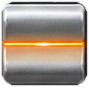

DIMMING / 調光の入口
調光とは？ ― 光の明るさが、舞台を変える。
調光ユニットのしくみ｜水抵抗式
フェーダーを上下してみよう

フェーダーを上げると銅板が下がって電球が明るくなり、下げると銅板が上がって暗くなります。
水抵抗式調光の仕組み・特徴
水抵抗式は、塩水を電気抵抗として使う調光方式です。2枚の電極のうち片方を上下させ、塩水に浸かる面積を変えることで抵抗を調整します。深く浸すと抵抗が小さくなり電球が明るく、浅くすると抵抗が大きくなり暗くなります。抵抗器と電球は直列で、抵抗器で電圧が降下するため、電球にかかる電圧が変わります。電気エネルギーの一部が熱になるため、水の温度上昇や蒸発、補水が必要でした。

先生のひとこと
昔の水抵抗器は、水が熱くなって蒸発したんだって。補充に「おしっこ」を使った、なんて逸話も……えへへ、ホントかな？
※調光方式の仕組みを比較するための模式図。実際の通電実験はしないでください。光の明るさ・波形の面積は概念的表現です。